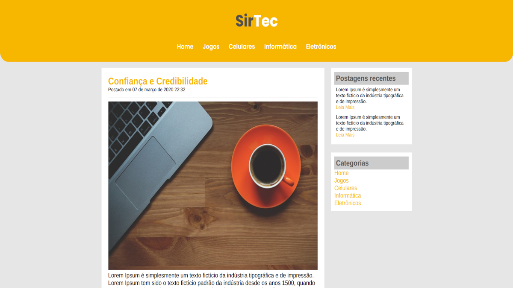
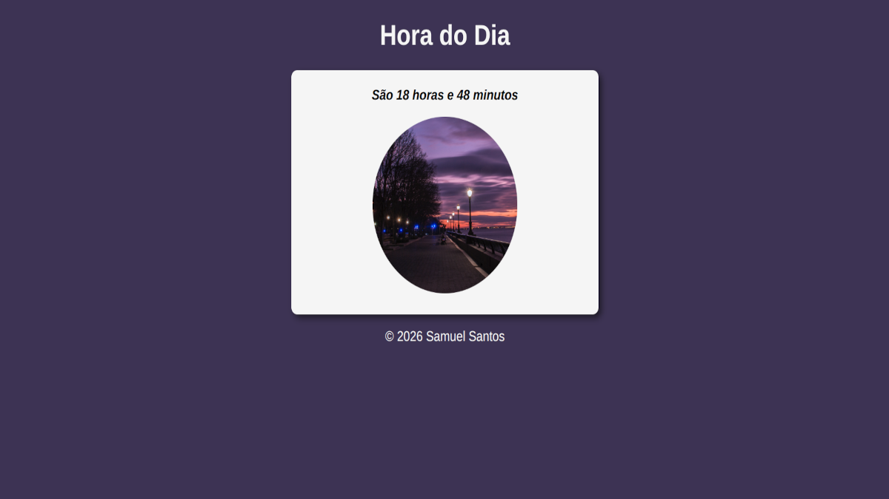
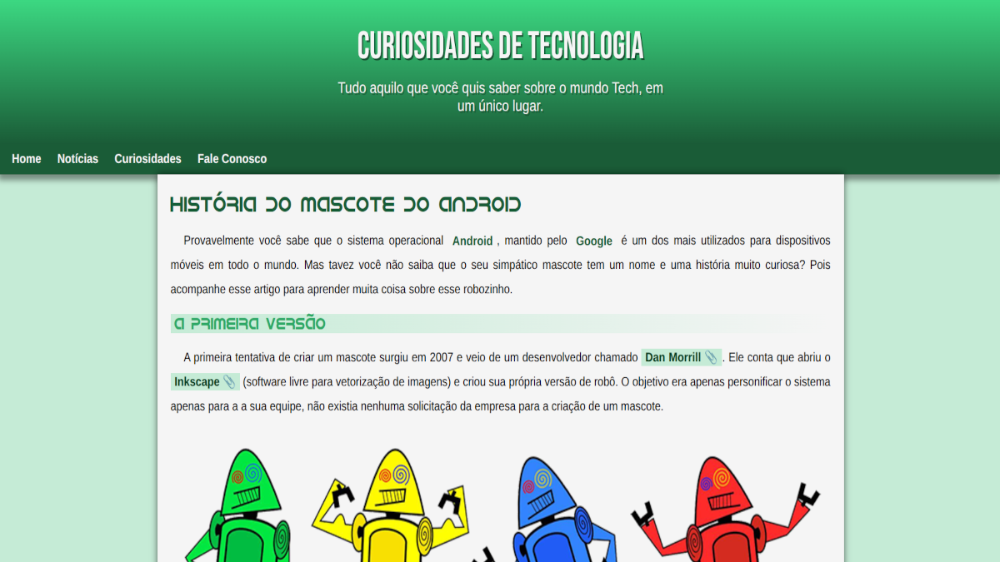
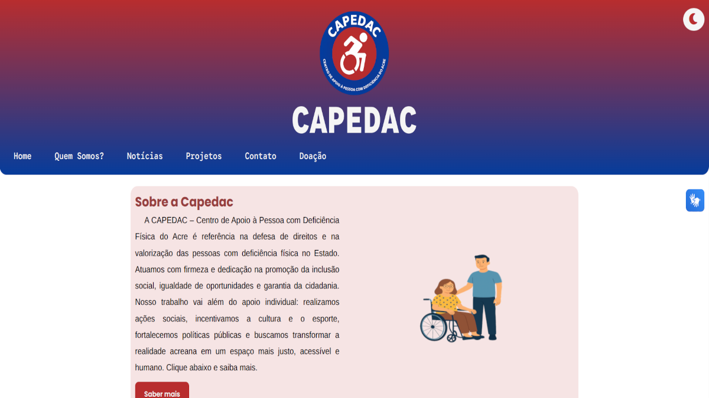
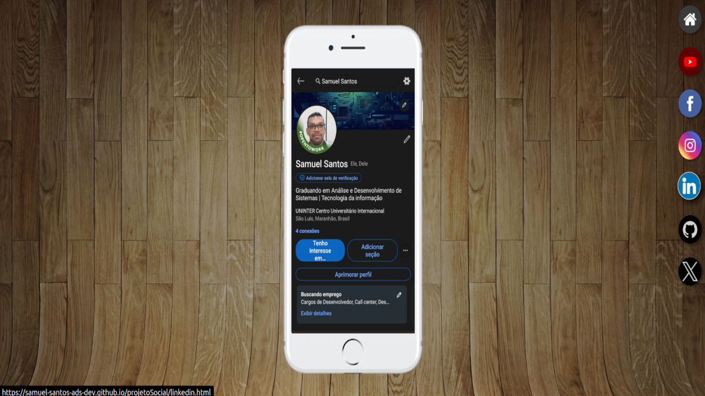

Samuel Santos
Graduando em Análise e Desenvolvimento de Sistemas(T.I). Desenvolvedor web dedicado à criação de interfaces modernas, responsivas e acessíveis, utilizando HTML, CSS e JavaScript. Tenho foco em boas práticas, código limpo e usabilidade, sempre buscando transformar ideias em soluções digitais eficientes. Em constante evolução, desenvolvo projetos práticos que simulam aplicações reais, unindo técnica, organização e design funcional.
Minhas Skills
HTML5
75%
CSS3
70%
JavaScript
30%
Python
30%
Linux
50%
Comunicativo
95%
Trabalho em equipe
100%
Adaptabilidade
100%
Formações
2013 - 2016
C.E.M Robson Dias Martins
Ensino Médio
2024 - 2026 (cursando)
Centro Universitário Uninter
Tecnólogo em Análise e Desenvolvimento de Sistemas
Projetos

2023
Projeto SirTech Blog
O SirTech Blog é um site fictício e estático, desenvolvido com HTML e CSS, totalmente educacional.
Saiba mais...
O SirTech Blog é um projeto fictício de site estático desenvolvido exclusivamente com HTML e CSS, criado com o objetivo de praticar e demonstrar habilidades em estruturação de páginas, estilização e design. O projeto apresenta um layout limpo e bem organizado.

2023
Projeto Hora do Dia
O projeto Hora do Dia é um site simples e interativo, desenvolvido com HTML, CSS e JavaScript, que altera dinamicamente o conteúdo e o visual da página de acordo com o horário atual do usuário.
Saiba mais...
O projeto Hora do Dia é um site interativo desenvolvido com HTML, CSS e JavaScript, criado com o objetivo de praticar manipulação do DOM e lógica em JavaScript. A aplicação identifica o horário atual do usuário e ajusta dinamicamente elementos visuais da página, como textos e estilos, proporcionando uma experiência simples, intuitiva e funcional. O projeto demonstra conceitos fundamentais de programação front-end, como condicionais, interação com o usuário e atualização dinâmica da interface.

2024
Projeto Bugdroid
O projeto Bugdroid é um site estático desenvolvido com HTML e CSS, inspirado no mascote do Android.
Saiba mais...
O projeto Bugdroid é um site estático desenvolvido com HTML e CSS, criado com o objetivo de praticar conceitos fundamentais de front-end, como estrutura semântica, uso correto de tags HTML e estilização com CSS. Inspirado no mascote do Android, o projeto apresenta um layout organizado e visualmente consistente, com atenção à hierarquia do conteúdo e à apresentação das informações. É um projeto voltado ao aprendizado, mas que demonstra cuidado visual e boas práticas de estruturação de páginas web.

2025
Projeto CAPEDAC
O projeto Capedac é um site institucional desenvolvido com HTML, CSS e JavaScript, totalmente responsivo.
Saiba mais...
O projeto Capedac é um site institucional desenvolvido com HTML, CSS e JavaScript, com layout totalmente responsivo e adaptado para diferentes tamanhos de tela. O site apresenta navegação intuitiva, seções informativas bem estruturadas e chamadas para ação, utilizando JavaScript para interações básicas que melhoram a usabilidade. O projeto demonstra cuidado com responsividade, organização do código, estrutura semântica e estilização consistente, entregando uma experiência clara e funcional tanto em dispositivos móveis quanto em desktops.

2025
Projeto Social
O projeto Redes Sociais é um site desenvolvido com HTML e CSS, com navegação simples, simulando o acesso a diferentes plataformas de redes sociais em uma única interface.
Saiba mais...
O projeto Redes Sociais é um site desenvolvido com HTML e CSS, criado para praticar conceitos de layout e organização de interfaces. A aplicação simula o acesso a diferentes redes sociais a partir de uma navegação centralizada, proporcionando uma experiência simples e intuitiva ao usuário. O projeto demonstra domínio de estruturação HTML, estilização com CSS e adaptação do layout para diferentes dispositivos, sendo uma solução visualmente organizada e funcional.

2025
Projeto Tela de Login
O projeto Tela de Login é uma interface web desenvolvida com HTML, CSS e JavaScript, projetado para simular a entrada de usuário em um sistema.
Saiba mais...
O projeto Tela de Login é uma interface de autenticação estática criada com HTML, CSS e JavaScript. A página apresenta campos de entrada para usuário e senha, acompanhados de instruções claras e elementos visuais que facilitam a interação e orientação do usuário. O layout foi construído com foco em responsividade, garantindo adaptação para diferentes tamanhos de tela, e utiliza JavaScript para implementar comportamentos essenciais à interface, mesmo sendo uma simulação sem backend real. O projeto demonstra organização do código, atenção à estrutura de layout, responsividade e boas práticas básicas de front-end para interfaces de login.